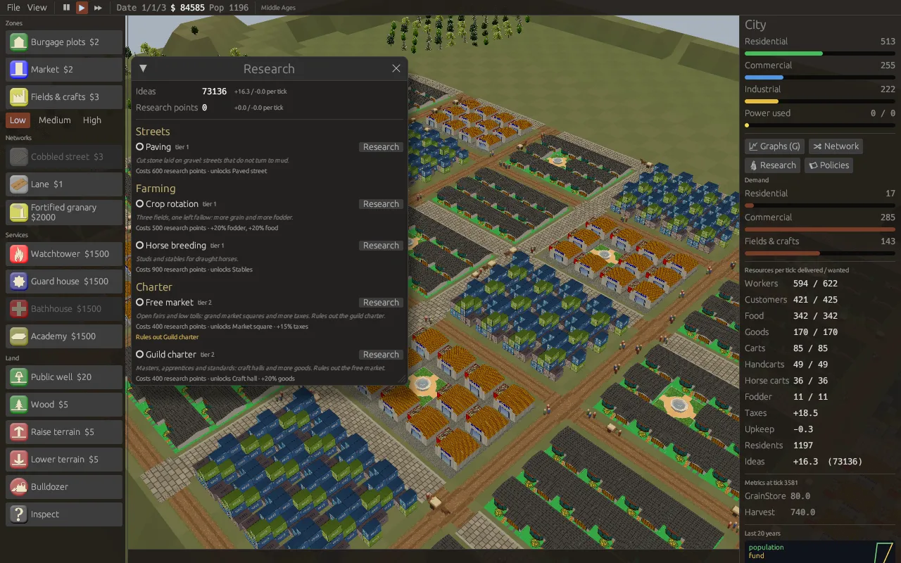
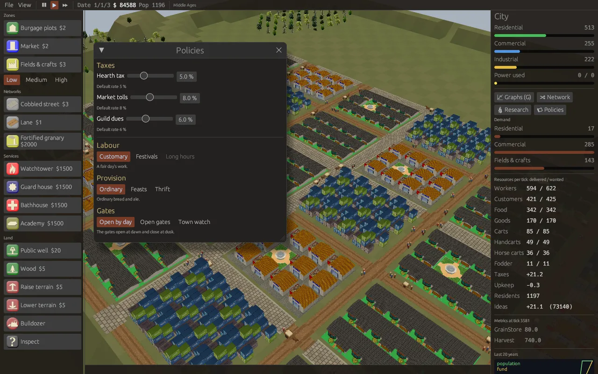
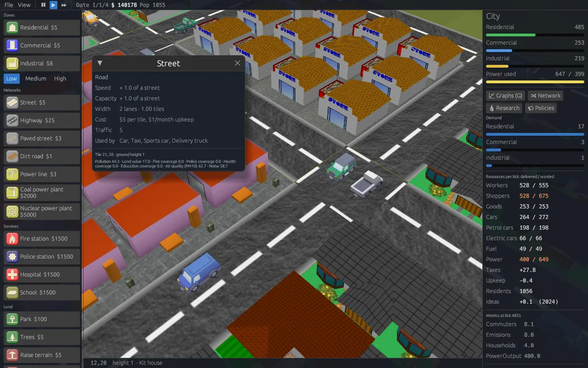
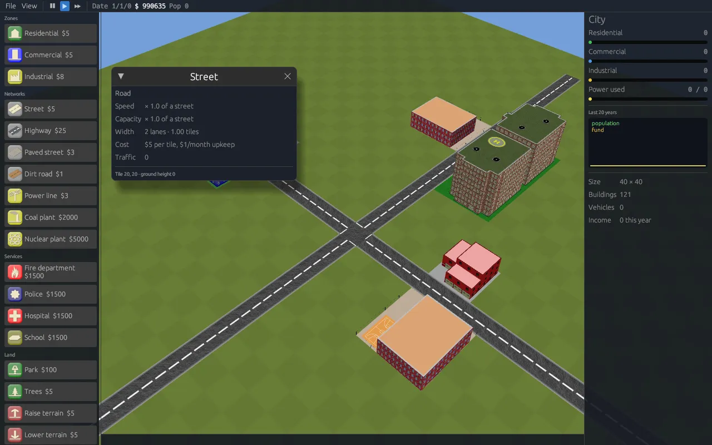

Build a city anywhere, in any age.
citysim is a free 3D city simulation written in Rust, derived from the classic OpenCity. Zone, wire and grow towns on generated terrain, or rebuild real and imagined places from OpenHistoryMap and OpenFantasyMap data, dressed for their era or world.

A city builder you can take apart
The rules of OpenCity, rebuilt as small, tested Rust crates. The simulation runs without a window, so the same city works in the game, the command line and your own tools.
Classic or GlassBox
Play by OpenCity's original growth rules, or by a data-driven GlassBox engine where every building needs and produces resources that roads and grids carry across the city.
Same seed, same city
No threads and no globals. Every run with the same seed evolves identically, which makes cities testable, shareable and easy to replay.
Generated or loaded
Plains, hills, mountains, islands and volcanoes from a seeded generator, or any greyscale heightmap. Raise and lower the ground yourself.
Browser and desktop
Play in the browser with nothing to install, on a phone too, or on Linux, Windows and macOS (Apple Silicon and Intel). A headless CLI creates, simulates, renders, imports and exports cities, and hosts regions for several players.
A GlassBox city, written as rules
The simulation can run on rules in the spirit of GlassBox, the engine Maxis built for SimCity. Zones, with low, medium and high densities, need and produce resources. Networks move them: workers, shoppers and goods by road, power through the grid. Services use them and cover the map with fire, police, health and education. Demand comes from what is left unmet or undelivered.

- Everything is data: resources, networks, map layers, zones, densities, buildings and services live in a rules file you can copy and change.
- The GlassBox rule language:
unitRule,mapRule,zoneRuleandagentRulescripts compile into the engine. - Extended GlassBox: timestamped metrics (
log) and agents that change maps along their routes (area), exportable as CSV to compare with measured data. - Overlays: pollution, land value, air quality, noise and service coverage.
- Graphs: press G to plot any of the engine's series over time (demand, resource flows, satisfaction, layers, metrics, growth), with trends, oscillation counts and CSV export.
- Resource network: press V to see workers, goods, cars and power travel across the city, and click a building to see where its supplies come from and what it lacks.
- Resource kinds: petrol and electric cars share the same parking, but one needs fuel and leaves smog, the other draws on the power grid.
- Roads of every age: streets and highways today, paved streets and dirt roads in the past, each with its own speed, capacity and width.
- Pre-industrial towns: huts, insulae, taverns, caravanserais, granaries and wells; people walk and carts carry trade.
- Run the city: research, tech trees, taxes, policies and vehicles, below.
unitRule plantMetrics
appliesTo coal_plant
log -timestamp=Time PowerOutput 400
end
agentRule freightTraffic
condition resource=goods
repeatAfter 3
area -timestamp=Time -map=AirQuality pm10 1.2 1
end
zoneRule familyNeighbourhood
appliesTo residential
sample random -count 2
test map pollution less 3
createUnit -id house_2
endLanguage references: Andrew Willmott, Inside GlassBox (GDC 2012), and A. R. Costagliola, M. Montanari, P. Bellavista, Interconnecting Urban Networks: a Novel Approach to Digital Twins through GlassBox Adaptation (University of Bologna). Details in GLASSBOX.md and RULES.md.
Run the city, not just the zoning
Under GlassBox rules a town has more to decide than where to draw zones: what to research, how much to tax, which policies to follow and what its streets carry.

Ideas become technology
People meeting in cafés and taverns have ideas. Schools and academies turn them into research points, and research projects unlock buildings and tools: highways, high-rises and nuclear power today, cobbled streets, insulae and banking in the past.
- Tech trees in their own files, with branches, tiers and a prerequisite graph, modelled on the tree of a Stronghold-like experiment.
- Choices for good: a service economy or industrial policy; a free market or a guild charter. Finishing one rules out the other.
- Bonuses: crop rotation feeds more, printing spreads ideas, computing speeds research.

Every rate is a trade-off
Set a rate for each tax. Raise it and the city earns more, but fewer people want to settle in the zones that pay, and those already there are less happy. Choose a stance for each policy, each with its costs and gains.
- Modern: property, sales and business taxes; car city or walkable centres, efficiency drive or atomic age, free schooling, open city or strict zoning.
- Pre-industrial: festivals or long hours, feasts or thrift, open gates or a town watch.
- Gated by research: atomic age waits for fission, festivals for the free market.

What moves, and what faces the street
Each road network lists its vehicles: what they look like, which roads they may use, how fast they go and what they carry. Modern towns get cars, taxis and trucks; towns of the past get people on foot, handcarts and horse carts.
- Kenney kits: modern towns are built from the CC0 Kenney city kits (suburban houses, shops, towers, workshops and factories); car, train and watercraft models ship too.
- Buildings that face the street: schools, fire stations, police and hospitals turn to the road beside them, and turn by hand with O.
- Scenarios and goals: start from a scenario (Bologna in 1600 from OpenHistoricalMap, a rail baron's valleys…) and race its goals; write your own in a small TOML file.
- Budget: see every line of income and spending, fund each service from 0 to 150% (cost and coverage follow), and borrow from the bank.
- Disasters: fires, floods and epidemics strike now and then; fire and health coverage protect, and the trucks head for the scene. Switch them off, or set one off by hand.
- Waterways: harbours on any lake, river or coast link the towns along it; ships (rowing and sailing boats before 1800) carry the trade, and canals bring water where you want it.
- Day and night, seasons and weather: dawn and dusk, white winters and golden autumns, rain and snow; storms feed fires and rain swells floods.
- Play with friends: host a region with
opencity-cli region-server; each player builds a town, neighbours trade, and ideas spread across the region as shared culture. - Regions: found neighbouring towns on a grid and play them one at a time; roads, track and power lines across the borders let them trade commuters, goods and power.
- Services on the road: fire trucks, police cars and ambulances drive out to the buildings they cover, and coverage follows the streets they can reach.
- Railways: lay track and stations; trains link towns no road joins, and roads cross the line at level crossings.
- Four kinds of road: street, highway, paved street and dirt road, each with its own speed, capacity and width.

Make your own rules
Rules, tech trees and policies are plain TOML files kept apart from each other: copy a rules set, swap its tech tree, share policies between eras, or write a world of your own. Files are checked on load, and errors name the faulty reference.
A research project
# assets/techs/modern.toml
[[tech]]
id = "industrial_policy"
name = "Industrial policy"
category = "Economy"
tier = 2
cost = { research = 1500 }
bonus = { goods = 0.2, fuel = 0.1 }
excludes = ["service_economy"]A tax and a policy
# assets/policies/modern.toml
[[tax]]
id = "property"
name = "Property tax"
resource = "taxes"
zones = ["residential"]
rate = 9
range = [0, 20]
demand = -0.4
[[policy]]
id = "energy"
name = "Energy"
[[policy.stance]]
id = "balanced"
name = "Balanced"
[[policy.stance]]
id = "atomic_age"
name = "Atomic age"
requires = "fission"
bonus = { power = 0.3 }A vehicle
# assets/rules/glassbox.toml
tech_tree = "modern"
policy_set = "modern"
[[network.vehicle]]
id = "truck"
name = "Delivery truck"
model = "pickup"
carries = ["goods", "fuel"]
direct = true
meshes = ["kenney/car-kit/delivery",
"kenney/car-kit/truck"]The full reference is in RULES.md; the rule language in GLASSBOX.md.
Ship one campaign as a game
A pack seals a scenario with its skin and rules. The game opens
straight into it, the look and rules cannot be changed, and progress is saved on quit.
Every release comes with each pack ready to download, and
scripts/make-pack.sh seals any release to your own pack for a class, a
museum or a game jam. See PACKS.md.
# assets/packs/bologna-1600.toml
name = "Bologna 1600"
scenario = "bologna-1600"
skin = "renaissance"
rules = "pre-industrial"
disaster_menu = true
# play it
opencity --pack bologna-1600
# or seal a release to it
scripts/make-pack.sh bologna-1600 \
citysim-v0.2.27-x86_64-pc-windows-msvc.zipLet an assistant play
opencity-cli mcp is a local Model Context Protocol server. Claude Code,
Claude Desktop or any MCP client can make a city, lay roads and zones, run years, read demand
and shortages, and try research, taxes and policies, all from a conversation. Useful for
testing rules, balancing a tech tree, or asking "what holds this town back?".
See MCP.md.
# from the unpacked folder
claude mcp add citysim \
-e OPENCITY_DATA="$PWD/assets" \
-- "$PWD/opencity-cli" mcp
# tools: new_city, load_city, save_city,
# city_summary, simulate, list_tools,
# apply_tool, inspect_tile, turn_building,
# research, policies, render_map,
# export_geojsonYour map is the level
Feed it GeoJSON or Overpass JSON and get a playable city: roads, power lines, zones, parks, services, water and elevation.
- OpenHistoryMap / OpenHistoricalMap: pick a date with
--date 1600and only what existed then is built. - OpenFantasyMap: planar worlds with no Earth coordinates, mapped through your own tag vocabulary.
- Declarative rules: a TOML file says which properties become which buildings.
- Round trip: export the city back to GeoJSON in its source coordinates.
- Natural streets: roads are drawn as smooth ribbons, so zig-zags of tiles become flowing diagonals and curves.

One simulation, many worlds
Skins re-dress the game for the era of a historical map or the world of a fantasy one: colours, names, available tools, icons and 3D models. Pick an era and a culture when you create a city, or let the date or the world choose. Six ancient cultures (Romans, Athenians, Gauls, Ptolemies, Han and Mauryas) are built from 0 A.D.'s own models, converted on first launch from the official repository.


What's new
A release after each finished feature. Full notes are on the releases page and in the changelog.
- 0.2.51Interface sounds, a sky with clouds behind the city, smoke over plants and factories, map symbols for the towns of a region, and a notice when research is done.
- 0.2.50Fire and police stations, hospital, school, coal and nuclear plants and the transit stops of the modern skin are Kenney scenes now, with engines, patrol cars and ambulances at their doors.
- 0.2.49The modern skin's water and waste works are Factory Kit scenes: pump house, water tower, treatment basins, landfill with a magnet crane, recycling line and incinerator, each plot picking its own parts.
- 0.2.48The modern skin dresses the infrastructure with Kenney kits: power poles wired tile to tile, bridges on pillars, Nature Kit trees and parks, a seaport with cranes and container stacks, a harbour with a landing.
- 0.2.46Regions in the browser: found a region and keep its towns in the browser's storage, or join an
opencity-cli region-serverover HTTP (play/?join=http://host:8077&player=ada&slot=0,0), sharing one region with desktop players. The Android APK is no longer built for releases: phones play the browser version. - 0.2.45The interface is drawn at the screen's pixel density: no more tiny menus on phones, in the browser and on Android; View > Size of the interface makes it larger still.
- 0.2.44Seaport and airport: gates to the rest of the world that bring in what the city lacks and ship out what it cannot sell; the main page runs the game in place.
- 0.2.43Rivers on generated maps, flowing from the hills to the sea or a lake, and bridges: roads and tracks cross water on a deck, at three times the price.
- 0.2.42The game runs in the browser: play with nothing to install; saves stay in the browser and exports download.
- 0.2.41Transit across borders: commuters go only so far from a crossing, and tram, bus and metro lines over the border carry them further.
- 0.2.40Rules editor: map layers in the graph, and new buildings, resources and layers created from it.
- 0.2.39Composed models: buildings built from parts and tints, so every plot looks a little different.
- 0.2.38Metro: tunnels bored under the city and metro stations, at three times street speed and out of the traffic.
- 0.2.37Traffic: busy streets slow trips by road; trams, trains and highways bypass it, buses feel half.
- 0.2.36Buses and trams: tram lines laid in streets, tram and bus stops, and people riding farther than they would drive; Rail and Waterways split in the sidebar.
- 0.2.34Water pipes run underground, under streets and buildings; an underground view (now B) shows them and lets the bulldozer dig them up.
- 0.2.33Water and waste: pumping stations, water towers, treatment plants, pipes, landfills, recycling and incinerators; tools grouped in sidebar submenus.
- 0.2.32Rules editor: edit the GlassBox rules in the game, as text with hints or as a graph, and try them on your city.
- 0.2.31Packs to download: Rail Baron and Bologna 1600 as games of their own, for Linux, Windows and macOS.
- 0.2.30The resource network is drawn on its own networks: streets, track, water and power lines, one lane per resource.
- 0.2.29Border gates: commuters, goods and power travel through each crossing, in and out of the neighbouring town.
- 0.2.28Border crossings: a road to the edge of the map runs on into the neighbouring town, online too.
- 0.2.27Packs: one scenario sealed with its skin and rules, shipped as a game of its own.
- 0.2.26Fix: the ancient cultures show their 0 A.D. buildings again.
- 0.2.25Day and night, seasons and weather: snowy winters, golden autumns, storms that feed fires.
- 0.2.24Region server: play a region with friends, one town each; trade and ideas cross the borders.
- 0.2.23Scenarios and goals: First town, Rail baron and Bologna 1600, with deadlines to beat.
- 0.2.22Budget: money by line, service funding sliders and bank loans.
- 0.2.21Cousin Vinnie: SimCity 3000's famous cheat wires $1,000,000, and the family moves in.
- 0.2.20Disasters: fires, floods and epidemics (plague before 1800); coverage protects, fire trucks respond.
- 0.2.19Waterways: harbours, ships and canals link the towns along a lake, river or coast.
- 0.2.18Regions: neighbouring towns, played one at a time, trade workers, goods and power across their borders.
- 0.2.17Service vehicles: fire trucks, police cars and ambulances; coverage follows the streets.
- 0.2.16Railways: track, stations and trains; towns linked by rail trade as if next door.
- 0.2.15Kenney city kits: modern towns built from CC0 suburban, commercial and industrial buildings.
- 0.2.14A local MCP server:
opencity-cli mcplets AI assistants build, run and inspect cities. - 0.2.13Taxes and policies: rates with trade-offs, policy stances, the Policies window.
- 0.2.12Kenney vehicles: an OBJ loader, and cars, taxis and trucks from the CC0 car kit.
- 0.2.11Plants and services face the street, and turn by hand.
- 0.2.10Tech trees in their own files: branches, tiers, rival choices and bonuses.
- 0.2.9Ideas and research: pooled resources, research projects and the Research window.
- 0.2.8Vehicles by the rules: walkers and carts before 1800, no carts on highways.
- 0.2.7Roads of every age, and the pre-industrial rules.
- 0.2.6The resource network on the map, and resource kinds (petrol and electric cars).
- 0.2.4Steady growth and GlassBox graphs.
Download
Or don't: play in your browser, with a demo
town to start from. Saves stay in the browser. For the desktop, unpack the archive and run opencity from inside
the folder, next to assets/.
Packs
The same game sealed to one campaign: it opens straight into it, with the look and rules fixed,
and keeps your game between launches. Unpack and run opencity as above.
Rail Baron · Two valleys, one long map: research railways and link the towns. Modern look, GlassBox rules.
Bologna 1600 · The centre of Bologna in 1600: bring printing to the town and keep it fed. Renaissance look, pre-industrial rules.
All files and notes are on the releases page. On macOS the binaries are unsigned: right-click and choose Open the first time.
Or build it
# everything runs in a pinned Docker image (Rust 1.88.0)
git clone https://github.com/sirmmo/citysim && cd citysim
scripts/dev.sh cargo test --workspace
cargo run --release -p opencity -- --demo --simulate-years 10
# a city from OpenHistoricalMap, as it was in 1600
cargo run --release -p opencity -- --geojson data/ohm-bologna-center.json --date 1600Standing on OpenCity
citysim began as a port of OpenCity's SVN trunk (revision 480), the GPL city simulation by Duong Khang NGUYEN, Frédéric RODRIGO and contributors (2003–2015).
- The growth rules, power, traffic, budget and terrain generator are ported from the C++ sources.
- All of OpenCity's models, textures, interface art and sounds ship unchanged.
- Old OpenCity save files can still be imported.
Read the credits and the porting notes.
Player guide · Rules, tech trees and policies · GlassBox language · Skins · GeoJSON import · All docs · Changelog
GPL-2.0-or-later, like OpenCity. Kenney models are CC0. 0 A.D. art is CC BY-SA 3.0 and is not part of the repository.